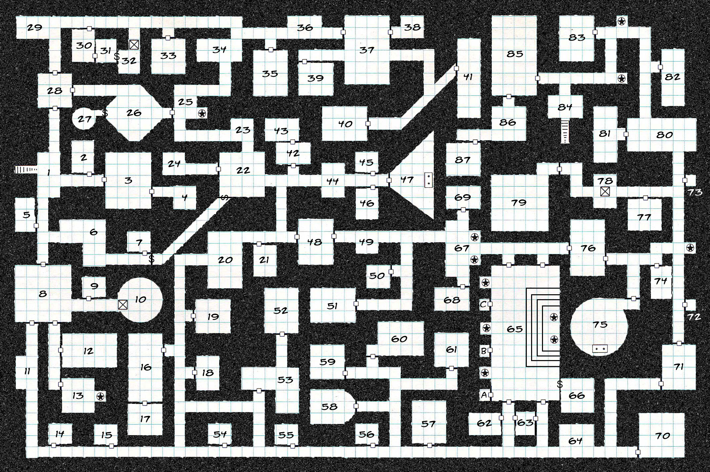

First Steps
To make your experience learning the command line a little bit more fun, use your imagination and picture that you are playing a text adventure like this:

The first step to start playing the game, is well, to open the game:
1) Entering the Command Line
On Ubuntu
- Open the Dash by clicking the Ubuntu icon in the upper-left
- Type “terminal”
- Select the Terminal application from the results that appear and click it
On Mac OS
- Hold down the command key and hit the spacebar.
- In the top right the blue “search bar” will pop up.
- Type: terminal
- Click on the Terminal application that looks like a black box.
On Windows
- To get access to a Unix command line, you’re going to need to install a program called “Cygwin”
- Read this tutorial by David Baumgold to install Cygwin on your computer (I’d recommend to also install Python too, because it could be handy on the future).
- Open Cygwin.
Now you that have your terminal open we can start playing :)
In this particular text adventure you are a wizard. You start in a dark room, and you don’t know where you are…
2) Your first command
In your terminal write:
~$ whoami
and then press enter.
Type only the characters after the dollar sign ($). If you type the $, you will get an error.
Every command line starts with some symbol or symbols designed to “prompt” you to action. In my case is the “dollar sign” that you see above at the left of the command. This prompt is usually preceded by information that depends on the details of your system, but normally depends on what your username is, and where are you located on your terminal.
The “whoami” command is a concatenation of the words “Who am I?”. What this command does is that it writes the username of the owner of the current login session. Picture that this is your character name in the game, in my case the output was:
luisrodriguez
Try typing “WHOAMI” in all caps on your terminal and then press enter. You should get a response saying something like:
“WHOAMI: command not found”
This is due to Case sensitivity; what this means, is that for the terminal, the command “whoami” is not the same as the word “WHOAMI”, and because it doesn’t understand what that word means, it just outputs an error.
3) The File System

Almost every operating system has it’s files arranged in what is called a tree-structured, or hierarchical filesystem. A hierarchical structure means that information on the computer is organized in a (upside-down) tree-like pattern of directories which may contain files and other directories.
Most graphical environments today include a file manager program to view and manipulate the contents of the file system. But because the terminal cannot provide graphical pictures of the file system structure, it must have a different way of representing things.
Directories? What are those?
Basically a directory it’s a folder. Most of the times they are interchangeable terms. When you open your file browser to graphically find files, you are searching through folders. These folders are pretty much the same as these “directories” we’re going to work with. In this case, imagine directories as “rooms” that you can walk into.

Think of the file system tree as a dungeon. At any given moment, you are located in a single directory (room) and from inside that directory, you can see its files (items), the pathway to its parent directory and the pathways to the subdirectories of the directory in which you are standing (think of the pathways as doors that go to other rooms).
The parent directory is a directory that contains the current directory.
For example, if you currently find yourself in a path similar to this: ”/Desktop/Cat_Pictures”, “Desktop” would correspond to the parent directory of “Cat_Pictures”.
4) Knowing where you are
Every time you open the terminal you are going to be in your “home” directory. The directory/room you are standing in right now is called the working directory.
In your terminal type:
~$ pwd
And press enter.
The “pwd” command means “Print Working Directory”. If you ever get lost in the computer, run this command and you’ll receive a trail of breadcrumbs all the way down from the top level of the computer to see where you are.
In my case the answer that I received from the computer was:
/home/luisrodriguez
This is my “home” directory. Don’t freak out if you get a different response from your terminal. Because the location of the home directory varies from platform to platform you can get a different result.
5) Observing Your Surroundings
In your terminal type:
~$ ls
The “ls” command means “List”. This command lists all of the non-hidden files that are in the current directory. In other words, it let’s you “view” what is inside of the directory in which you currently are.
In my case, the answer that I received from the computer when I typed the ls command was:
Desktop
Documents
Downloads
hello.py
hello.txt
index.html
Music
Pictures
Projects
Public
The_WebDev_Blog
6) Creating Rooms/Directories
As a wizard you need a lot of space to do your magical experiments, so I’ll show you how you can create extra rooms to play with.
In your terminal type:
~$ mkdir First_Directory
The “mkdir” command means “Make Directory”. Right now we are creating a new directory called “First_Directory”. Note that, differently to all of the commands we have typed before, this command is composed by two parts; “mkdir” and “First_Directory”.
The “mkdir” portion is what we have come to know as a regular command. The “First_Directory” portion is what is called an argument. Command line arguments are values that tells the command in what they should act on or from. In this case, this command tells the computer to make a directory named “First Directory” on the directory in which we currently are.
Now, if I type the “ls” command, the response that I receive is:
Desktop
Documents
Downloads
First_Directory
hello.py
hello.txt
index.html
Music
Pictures
Projects
Public
The_WebDev_Blog
You can see that the “First_Directory” directory has been successfully created.
7) Walking into new Rooms
Altough we’ve have created a new directory, we are not inside of it, yet…
In your terminal type:
~$ cd First_Directory
The “cd” command stands for “Change Directory”, it lets you move between directories on your file system. Your command prompt should change to something like:
~/First_Directory$
That means that we’ve succesfully changed the directories.
If you now type the “ls” command, you should get an empty response because the First_Directory itself is empty.
If you want to go back to the home directory, you can type this:
~/First_Directory$ cd ..
The “cd ..” command means “go up by one directory”. Note that your command prompt changes again:
~$
and that if you type the “ls” command, you get all of the same items that you received before:
~$ ls
Desktop
Documents
Downloads
First_Directory
hello.py
hello.txt
index.html
Music
Pictures
Projects
Public
The_WebDev_Blog
Using the “cd” command along with the “ls” command is a very common pattern that you’ll use many times if you keep using the command line.
Quiz
Solve the quiz that correspond this page and then move into the exercises.
Go to QuizExercises
- In your home directory, create a directory called “The_WebDev_Blog”.
- Enter the “The_WebDev_Blog” directory using the “cd” command.
- Inside of the “The_WebDev_Blog” directory create a directory called “The_Command_Line”.
- Use the “ls” command to confirm that you have created the “The_Command_Line” directory.
- Enter the “The_Command_Line” directory
- Use the “pwd” command to know where are you located
- Return to your home directory using the “cd ..” command (twice)
When you’ve finished the exercises, go to the next page so you can learn some helpful shortcuts!